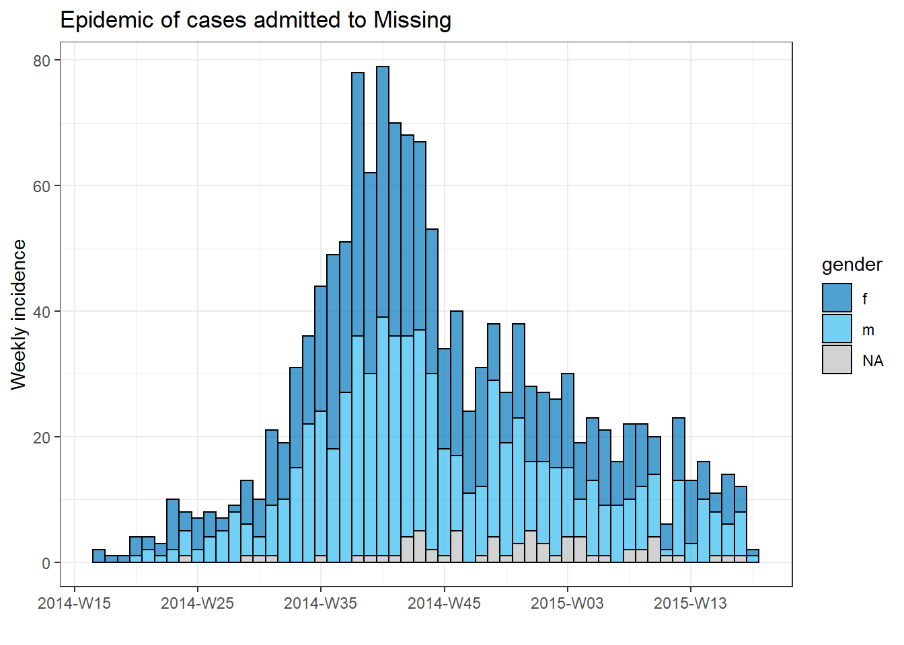
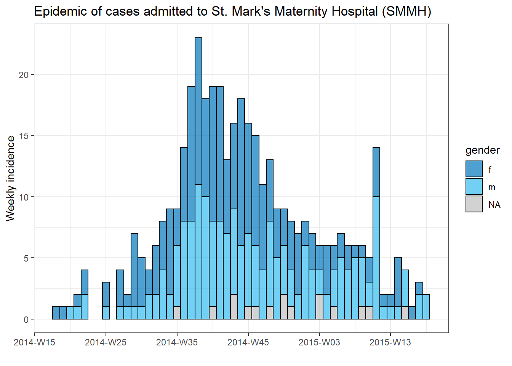
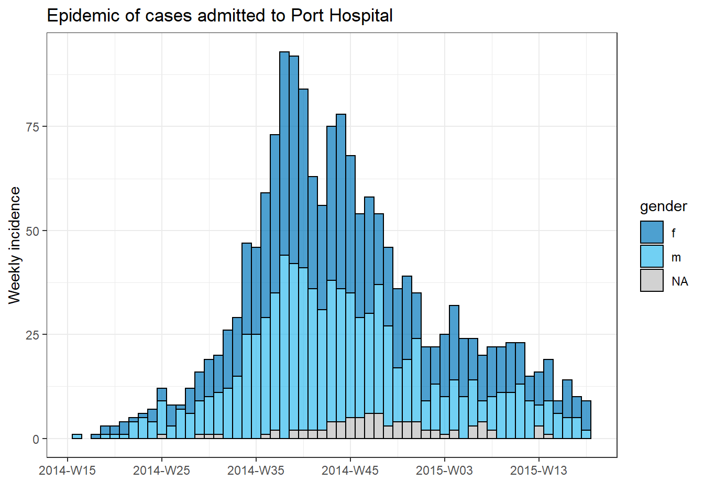
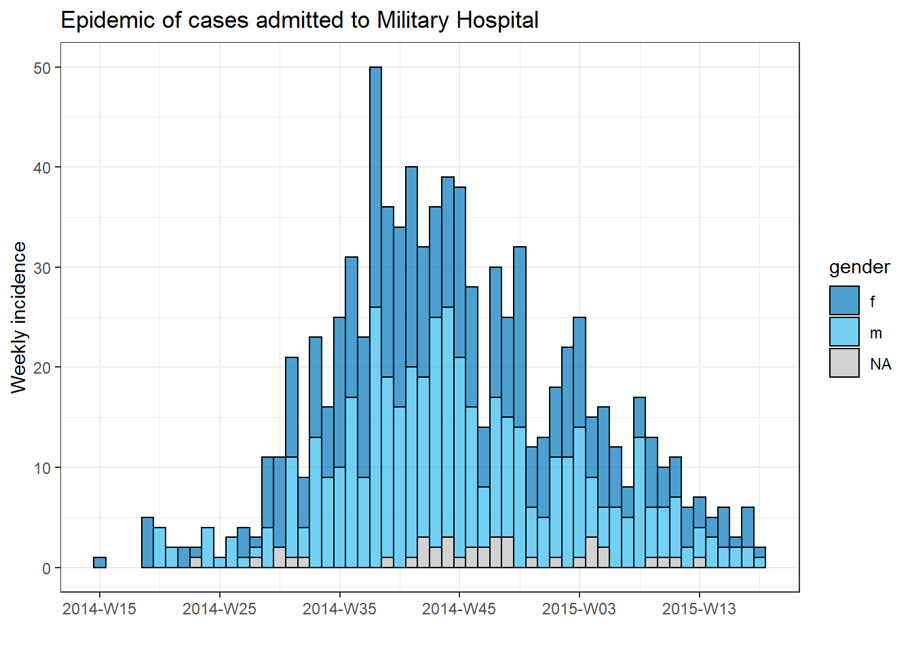
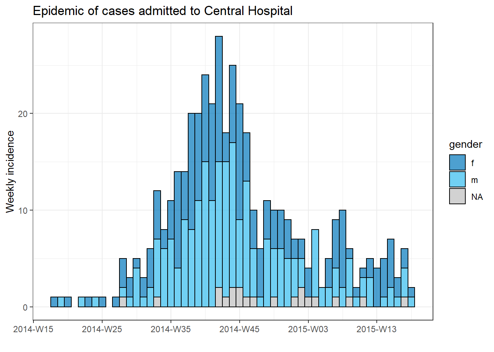

16 Borrador. Iteración, bucles y listas
ADVERTENCIA: Esta traducción es sólo un borrador de la traducción al español. Este documento tal cual está ha sido generado automáticamente con DeepL.com y se han hecho algunas correcciones globales. Está pendiente de una revisión completa.
Con frecuencia nos enfrentamos a la repetición de análisis por subgrupos, como países, distritos o grupos de edad. Estas son sólo algunas de las situaciones frecuentes que implican la iteración. La codificación de sus operaciones iterativas utilizando los enfoques que se indican a continuación te ayudarán a realizar estas tareas repetitivas más rápidamente, a reducir la posibilidad de error y a reducir la longitud del código.
Esta página presentará dos enfoques de las operaciones iterativas: el uso de bucles for y el uso del paquete purrr.
- Los bucles for iteran el código a través de una serie de entradas, pero son menos comunes en R que en otros lenguajes de programación. No obstante, los presentamos aquí como herramienta de aprendizaje y referencia
- El paquete purrr es el enfoque tidyverse de las operaciones iterativas - funciona “mapeando” una función a través de muchas entradas (valores, columnas, conjuntos de datos, etc.)
En el camino, mostraremos ejemplos como:
- Importación y exportación de múltiples archivos
- Creación de epicurvas para múltiples jurisdicciones
- Ejecución de pruebas T para varias columnas en un dataframe
En la sección de purrr también proporcionaremos varios ejemplos de creación y manejo de listas.
16.1 Preparación
Cargar paquetes
Este trozo de código muestra la carga de los paquetes necesarios para los análisis. En este manual destacamos p_load() de pacman, que instala el paquete si es necesario y lo carga para su uso. También puedes cargar los paquetes instalados con library() de R base. Consulta la página sobre fundamentos de R para obtener más información sobre los paquetes de R.
pacman::p_load(
rio, # import/export
here, # file locator
purrr, # iteration
tidyverse # data management and visualization
)Importar datos
Importamos los datos de casos de una epidemia de ébola simulada. Si quieres seguir el proceso, clica para descargar linelist “limpia” (como archivo .rds). Importa los datos con la función import() del paquete rio (maneja muchos tipos de archivos como .xlsx, .csv, .rds - Mira la página de importación y exportación para más detalles).
# import the linelist
linelist <- import("linelist_cleaned.rds")A continuación se muestran las primeras 50 filas del listado.
16.2 bucles for
bucles for en R
Los bucles for no se resaltan mucho en R, pero son comunes en otros lenguajes de programación. Como principiante, pueden ser útiles para aprender y practicar, ya que son más fáciles de “explorar”, “depurar”, y de otra manera comprender exactamente lo que está sucediendo para cada iteración, especialmente cuando todavía no te sientes cómodo escribiendo tus propias funciones.
Puedes pasar rápidamente de los bucles for a la iteración con funciones mapeadas con purrr (véase la sección siguiente).
Componentes básicos
Un bucle for tiene tres partes fundamentales:
- La secuencia de elementos a iterar
- Las operaciones a realizar por cada elemento de la secuencia
- El contenedor de los resultados (opcional)
La sintaxis básica es: for (elemento en la secuencia) {hacer operaciones con el elemento}. Fíjate en los paréntesis y las llaves. Los resultados pueden ser impresos en la consola, o almacenados en un objeto R contenedor.
A continuación se muestra un sencillo ejemplo de bucle for.
for (num in c(1,2,3,4,5)) { # the SEQUENCE is defined (numbers 1 to 5) and loop is opened with "{"
print(num + 2) # The OPERATIONS (add two to each sequence number and print)
} # The loop is closed with "}" ## [1] 3
## [1] 4
## [1] 5
## [1] 6
## [1] 7
# There is no "container" in this exampleSecuencia
Esta es la parte “for” de un bucle for - las operaciones se ejecutarán “para” (for) cada elemento de la secuencia. La secuencia puede ser una serie de valores (por ejemplo, nombres de jurisdicciones, enfermedades, nombres de columnas, elementos de listas, etc.), o puede ser una serie de números consecutivos (por ejemplo, 1,2,3,4,5). Cada enfoque tiene sus propias utilidades, que se describen a continuación.
La estructura básica de una declaración de secuencia es el elemento en el vector.
- Puedes escribir cualquier carácter o palabra en lugar de “item” (por ejemplo, “i”, “num”, “hosp”, “district”, etc.). El valor de este “elemento” cambia con cada iteración del bucle, pasando por cada valor del vector.
- El vector puede ser de valores de caracteres, nombres de columnas, o quizás una secuencia de números - estos son los valores que cambiarán con cada iteración. Puedes utilizarlos dentro de las operaciones del bucle for utilizando el término “item”.
Ejemplo: secuencia de valores de caracteres
En este ejemplo, se realiza un bucle para cada valor de un vector de caracteres predefinido de nombres de hospitales.
# make vector of the hospital names
hospital_names <- unique(linelist$hospital)
hospital_names # print## [1] "Other"
## [2] "Missing"
## [3] "St. Mark's Maternity Hospital (SMMH)"
## [4] "Port Hospital"
## [5] "Military Hospital"
## [6] "Central Hospital"Hemos elegido el término hosp para representar los valores del vector nombres_de_hospital. Para la primera iteración del bucle, el valor de hosp será hospital_names[1]]. Para la segunda iteración del bucle será hospital_names[2]]. Y así sucesivamente…
# a 'for loop' with character sequence
for (hosp in hospital_names){ # sequence
# OPERATIONS HERE
}Ejemplo: secuencia de nombres de columnas
Se trata de una variación de la secuencia de caracteres anterior, en la que se extraen los nombres de un objeto R existente y se convierten en el vector. Por ejemplo, los nombres de las columnas de un dataframe. Convenientemente, en el código de operaciones del bucle for, los nombres de las columnas se pueden utilizar para indexar (subconjuntar) tu dataframe original
A continuación, la secuencia son los names() (nombres de columnas) del dataframe linelist. El nombre de nuestro “elemento” es col, que representará el nombre de cada columna a medida que avanzan los bucles.
A modo de ejemplo, incluimos código de operaciones dentro del bucle for, que se ejecuta para cada valor de la secuencia. En este código, los valores de la secuencia (nombres de las columnas) se utilizan para indexar (subconjuntar) linelist, una por una. Como se enseñó en la página de fundamentos de R, se utilizan dobles ramificaciones [[ ]] para el subconjunto. La columna resultante se pasa a is.na(), y luego a sum() para producir el número de valores de la columna que faltan. El resultado se imprime en la consola: un número por cada columna.
Una nota sobre la indexación con los nombres de las columnas - ¡cuando se refiera a la propia columna ¡no escribas simplemente “col”! ya que representa sólo el nombre de la columna de caracteres! Para referirse a la columna completa debe utilizar el nombre de la columna como un índice en linelist a través de linelist[[col]].
for (col in names(linelist)){ # loop runs for each column in linelist; column name represented by "col"
# Example operations code - print number of missing values in column
print(sum(is.na(linelist[[col]]))) # linelist is indexed by current value of "col"
}## [1] 0
## [1] 0
## [1] 2087
## [1] 256
## [1] 0
## [1] 936
## [1] 1323
## [1] 278
## [1] 86
## [1] 0
## [1] 86
## [1] 86
## [1] 86
## [1] 0
## [1] 0
## [1] 0
## [1] 2088
## [1] 2088
## [1] 0
## [1] 0
## [1] 0
## [1] 249
## [1] 249
## [1] 249
## [1] 249
## [1] 249
## [1] 149
## [1] 765
## [1] 0
## [1] 256Secuencia de números
En este enfoque, la secuencia es una serie de números consecutivos. Por lo tanto, el valor del “ítem” no es un valor de carácter (por ejemplo, “Hospital Central” o “fecha_de_inicio”), sino que es un número. Esto es útil para hacer un bucle a través de los dataframes, ya que puede utilizar el número del “ítem” dentro del bucle for para indexar el dataframe por número de fila.
Por ejemplo, digamos que quiere recorrer cada fila de tu dataframe y extraer cierta información. Sus “elementos” serían números de fila numéricos. A menudo, los “elementos” en este caso se escriben como i.
El proceso del bucle for podría explicarse en palabras como “para cada elemento de una secuencia de números desde 1 hasta el número total de filas de mi dataframe, haz X”. Para la primera iteración del bucle, el valor del “elemento” i sería 1. Para la segunda iteración, i sería 2, etc.
Aquí está el aspecto de la secuencia en código: for (i in 1:nrow(linelist)) {CODIGO DE OPERACIONES} donde i representa el “elemento” y 1:nrow(linelist) produce una secuencia de números consecutivos desde 1 hasta el número de filas en linelist.
for (i in 1:nrow(linelist)) { # use on a data frame
# OPERATIONS HERE
} Si quieres que la secuencia sea numérica, pero partes de un vector (no de un dataframe), utiliza el atajo seq_along() para devolver una secuencia de números para cada elemento del vector. Por ejemplo, for (i en seq_along(nombres_de_hospital) {Código_de_operaciones}.
El código siguiente devuelve en realidad números, que se convertirían en el valor deien tu respectivo bucle.
seq_along(hospital_names) # use on a named vector## [1] 1 2 3 4 5 6Una ventaja de usar números en la secuencia es que es fácil usar también el númeroipara indexar un contenedor que almacene las salidas del bucle. Hay un ejemplo de esto en la sección de Operaciones más abajo.
Operaciones
Este es el código dentro de las llaves { } del bucle for. Quieres que este código se ejecute para cada “elemento” de la secuencia. Por lo tanto, ¡ten cuidado de que cada parte de tu código que cambia por el “ítem” esté correctamente codificado de manera que realmente cambie! Por ejemplo, recuerda usar [[ ]] para la indexación.
En el ejemplo siguiente, iteramos por cada fila de linelist. Los valores de género y edad de cada fila se pegan juntos y se almacenan en el vector de caracteres contenedor cases_demographics. Observe cómo también utilizamos la indexación [[i]] para guardar la salida del bucle en la posición correcta en el vector “contenedor”.
# create container to store results - a character vector
cases_demographics <- vector(mode = "character", length = nrow(linelist))
# the for loop
for (i in 1:nrow(linelist)){
# OPERATIONS
# extract values from linelist for row i, using brackets for indexing
row_gender <- linelist$gender[[i]]
row_age <- linelist$age_years[[i]] # don't forget to index!
# combine gender-age and store in container vector at indexed location
cases_demographics[[i]] <- str_c(row_gender, row_age, sep = ",")
} # end for loop
# display first 10 rows of container
head(cases_demographics, 10)## [1] "m,2" "f,3" "m,56" "f,18" "m,3" "f,16" "f,16"
## [8] "f,0" "m,61" "f,27"Contenedor
A veces los resultados de tu bucle for se imprimirán en la consola o en el panel de gráficos de RStudio. Otras veces, querrá almacenar los resultados en un “contenedor” para tu uso posterior. Dicho contenedor puede ser un vector, un dataframe o incluso una lista.
Lo más eficiente es crear el contenedor de los resultados antes de comenzar el bucle for. En la práctica, esto significa crear un vector vacío, un dataframe o una lista. Estos pueden ser creados con las funciones vector() para vectores o listas, o con matrix() y data.frame() para un dataframe.
Vector vacío
Utiliza vector() y especifique el mode = en función del tipo esperada de los objetos que va a insertar - ya sea “double” (para contener números), “carácter” o “lógico”. También debe establecer la length = por adelantado. Esta debe ser la longitud de tu secuencia de bucle for.
Digamos que quieres almacenar la mediana de la demora hasta el ingreso para cada hospital. Utilizaría “double” y establecería que la longitud fuera el número de salidas esperadas (el número de hospitales únicos en el set de datos).
delays <- vector(
mode = "double", # we expect to store numbers
length = length(unique(linelist$hospital))) # the number of unique hospitals in the datasetDataframe vacío
Puedes hacer un dataframe vacío especificando el número de filas y columnas de esta manera:
delays <- data.frame(matrix(ncol = 2, nrow = 3))Lista vacía
Es posible que desee almacenar algunos gráficos creados por un bucle for en una lista. Una lista es como un vector, pero contiene otros objetos R dentro de ella que pueden ser de diferentes tipos. Los elementos de una lista pueden ser un solo número, un dataframe, un vector e incluso otra lista.
En realidad, se inicializa una lista vacía utilizando el mismo comando vector() que el anterior, pero con mode = "list". Especifica la longitud como quieras.
plots <- vector(mode = "list", length = 16)Impresión
Ten en cuenta que para imprimir desde dentro de un bucle for probablemente tendrás que envolver explícitamente con la función print().
En este ejemplo, la secuencia es un vector de caracteres explícito, que se utiliza para subsumir linelist en un hospital. Los resultados no se almacenan en un contenedor, sino que se imprimen en la consola con la función print().
for (hosp in hospital_names){
hospital_cases <- linelist %>% filter(hospital == hosp)
print(nrow(hospital_cases))
}## [1] 885
## [1] 1469
## [1] 422
## [1] 1762
## [1] 896
## [1] 454###Probar tu bucle for {.unnumbered}
Para probar tu bucle, puedes ejecutar un comando para hacer una asignación temporal del “elemento”, como i <- 10 o hosp <- "Central Hospital ". Haz esto fuera del bucle y luego ejecuta tu código de operaciones solamente (el código dentro de las llaves) para ver si se producen los resultados esperados.
Bucles con gráficos
Para reunir los tres componentes (contenedor, secuencia y operaciones) vamos a intentar trazar una epicurva para cada hospital (véase la página sobre curvas epidémicas).
Podemos hacer una bonita epicurva de todos los casos por género utilizando el paquete incidence2 como se indica a continuación:
# create 'incidence' object
outbreak <- incidence2::incidence(
x = linelist, # dataframe - complete linelist
date_index = date_onset, # date column
interval = "week", # aggregate counts weekly
groups = gender, # group values by gender
na_as_group = TRUE) # missing gender is own group
# plot epi curve
plot(outbreak, # name of incidence object
fill = "gender", # color bars by gender
color = "black", # outline color of bars
title = "Outbreak of ALL cases" # title
)Para producir un gráfico separado para cada caso del hospital, podemos poner este código de epicurva dentro de un bucle for.
En primer lugar, guardamos un vector con nombre de los nombres únicos de los hospitales, hospital_names. El bucle for se ejecutará una vez para cada uno de estos nombres: for (hosp in hospital_names). En cada iteración del bucle for, el nombre actual del hospital del vector se representará como hosp para tu uso dentro del bucle.
Dentro de las operaciones del bucle, puede escribir el código R de forma normal, pero utilizando el “elemento” (hosp en este caso) sabiendo que tu valor será cambiante. Dentro de este bucle:
- Se aplica un
filter()alinelist, de forma que la columnahospitaldebe ser igual al valor actual dehosp - El objeto de incidencia se crea en
linelistfiltradas - Se crea una gráfica del hospital actual, con un título autoajustable que utiliza
hosp - El gráfico del hospital actual se guarda temporalmente y luego se imprime
- El bucle sigue adelante para repetirse con el siguiente hospital en
hospital_names
# make vector of the hospital names
hospital_names <- unique(linelist$hospital)
# for each name ("hosp") in hospital_names, create and print the epi curve
for (hosp in hospital_names) {
# create incidence object specific to the current hospital
outbreak_hosp <- incidence2::incidence(
x = linelist %>% filter(hospital == hosp), # linelist is filtered to the current hospital
date_index = date_onset,
interval = "week",
groups = gender,
na_as_group = TRUE
)
# Create and save the plot. Title automatically adjusts to the current hospital
plot_hosp <- plot(
outbreak_hosp,
fill = "gender",
color = "black",
title = stringr::str_glue("Epidemic of cases admitted to {hosp}")
)
# print the plot for the current hospital
print(plot_hosp)
} # end the for loop when it has been run for every hospital in hospital_names 
Seguimiento del progreso de un bucle
Un bucle con muchas iteraciones puede funcionar durante muchos minutos o incluso horas. Por lo tanto, puede ser útil imprimir el progreso en la consola de R. La sentencia if de abajo puede colocarse dentro de las operaciones del bucle para imprimir cada 100 números. Sólo tiene que ajustarla para que i sea el “elemento” de tu bucle.
# loop with code to print progress every 100 iterations
for (i in seq_len(nrow(linelist))){
# print progress
if(i %% 100==0){ # The %% operator is the remainder
print(i)
}16.3 purrr y listas
Otro enfoque de las operaciones iterativas es el paquete purrr - es el enfoque tidyverse de la iteración.
Si tienes que realizar la misma tarea varias veces, probablemente merezca la pena crear una solución generalizada que pueda utilizar en muchas entradas. Por ejemplo, producir gráficos para múltiples jurisdicciones, o importar y combinar muchos archivos.
También hay algunas otras ventajas de purrr - puedes usarlo con tuberías %>%, maneja los errores mejor que los bucles for normales, ¡y la sintaxis es bastante limpia y simple! Si está utilizando un bucle for, probablemente pueda hacerlo de forma más clara y sucinta con purrr!
Ten en cuenta que purrr es una herramienta de programación funcional. Es decir, las operaciones que se van a aplicar de forma iterativa están envueltas en funciones. Consulta la página Escribir funciones para aprender a escribir tus propias funciones.
purrr también se basa casi por completo en listas y vectores, así que piensa en ello como si aplicara una función a cada elemento de esa lista/vector.
Cargar paquetes
purrr forma parte de tidyverse, por lo que no es necesario instalar/cargar un paquete aparte.
pacman::p_load(
rio, # import/export
here, # relative filepaths
tidyverse, # data mgmt and viz
writexl, # write Excel file with multiple sheets
readxl # import Excel with multiple sheets
)
map()
Una de las funciones principales de purrr es map(), que “mapea” (aplica) una función a cada elemento de entrada de una lista/vector que has proporcionado.
La sintaxis básica es map(.x = SECUENCIA, .f = FUNCIÓN, OTROS ARGUMENTOS). Con un poco más de detalle:
-
.x =son las entradas sobre las que se aplicará iterativamente la función .f - por ejemplo, un vector de nombres de jurisdicciones, columnas de un dataframe o una lista de dataframes -
.f =es la función a aplicar a cada elemento de la entrada.x- puede ser una función comoprint()que ya existe, o una función personalizada que tu definas. La función se suele escribir después de una tilde~(detalles más abajo).
Algunas notas más sobre la sintaxis:
- Si la función no necesita especificar más argumentos, puede escribirse sin paréntesis y sin tilde (por ejemplo,
.f = mean). Para proporcionar argumentos que tendrán el mismo valor en cada iteración, proporciónelos dentro demap()pero fuera del argumento.f =, como elna.rm = Tenmap(.x = mi_lista, .f = media, na.rm=T). - Puedes utilizar
.x(o simplemente.) dentro de la función.f =como marcador de posición para el valor.xde esa iteración - Utiliza la sintaxis con tilde (
~) para tener un mayor control sobre la función - escriba la función de forma normal con paréntesis, como por ejemplo:map(.x = mi_lista, .f = \~media(., na.rm = T)). Utiliza esta sintaxis sobre todo si el valor de un argumento va a cambiar en cada iteración, o si es el propio valor.x(véanse los ejemplos siguientes)
La salida de usar map() es una lista - una lista es un tipo de objeto como un vector pero cuyos elementos pueden ser de diferentes tipos. Por lo tanto, una lista producida por map() podría contener muchos dataframes, o muchos vectores, muchos valores individuales, ¡o incluso muchas listas! Existen versiones alternativas de map() que se explican a continuación y que producen otros tipos de salidas (por ejemplo, map_dfr() para producir un dataframe, map_chr() para producir vectores de caracteres y map_dbl() para producir vectores numéricos).
Ejemplo: importar y combinar hojas de Excel
Hagamos una demostración con una tarea epidemiológica común: - Quieres importar un libro de Excel con datos de casos, pero los datos están divididos en diferentes hojas en el libro. ¿Cómo puedes importar y combinar eficazmente las hojas en un dataframe?
Supongamos que nos envían el siguiente libro de Excel. Cada hoja contiene casos de un determinado hospital.

Este es un enfoque que utiliza map():
-
map()la funciónimport()para que se ejecute para cada hoja de Excel - Combinar los dataframes importados en uno solo utilizando
bind_rows() - A lo largo del proceso, conserva el nombre original de la hoja para cada fila, almacenando esta información en una nueva columna en el dataframe final
En primer lugar, tenemos que extraer los nombres de las hojas y guardarlos. Proporcionamos la ruta del archivo de Excel a la función excel_sheets() del paquete readxl, que extrae los nombres de las hojas. Los almacenamos en un vector de caracteres llamado sheet_names.
sheet_names <- readxl::excel_sheets("hospital_linelists.xlsx")Aquí están los nombres:
sheet_names## [1] "Central Hospital"
## [2] "Military Hospital"
## [3] "Missing"
## [4] "Other"
## [5] "Port Hospital"
## [6] "St. Mark's Maternity Hospital"Ahora que tenemos este vector de nombres, map() puede proporcionarlos uno a uno a la función import(). En este ejemplo, los sheet_names son .x e import() es la función .f.
Recuerda de la página de importación y exportación que cuando se utiliza en libros de Excel, import() puede aceptar el argumento which = especificando la hoja a importar. Dentro de la función .f en import(), proporcionamos which = .x, cuyo valor cambiará con cada iteración a través del vector `sheet_names - primero “Hospital Central”, luego “Military Hospital”, etc.
Hay que tener en cuenta que, como hemos utilizado map(), los datos de cada hoja de Excel se guardarán como un dataframe separado dentro de una lista. Queremos que cada uno de estos elementos de la lista (dataframes) tenga un elemento names, así que antes de pasar sheet_names a map() lo pasamos a través de set_names() de purrr, lo que asegura que cada elemento de la lista obtenga el nombre apropiado.
Guardamos la lista de salida como combined.
combined <- sheet_names %>%
purrr::set_names() %>%
map(.f = ~import("hospital_linelists.xlsx", which = .x))Cuando inspeccionamos la salida, vemos que los datos de cada hoja de Excel se guardan en la lista con un nombre. Esto es bueno, pero no hemos terminado.

Por último, utilizamos la función bind_rows() (de dplyr) que acepta la lista de dataframes de estructura similar y los combina en un dataframe. Para crear una nueva columna a partir de los nombres de los elementos de la lista, utilizamos el argumento .id =y le proporcionamos el nombre deseado para la nueva columna.
A continuación se muestra toda la secuencia de comandos:
sheet_names <- readxl::excel_sheets("hospital_linelists.xlsx") # extract sheet names
combined <- sheet_names %>% # begin with sheet names
purrr::set_names() %>% # set their names
map(.f = ~import("hospital_linelists.xlsx", which = .x)) %>% # iterate, import, save in list
bind_rows(.id = "origin_sheet") # combine list of data frames, preserving origin in new column ¡Y ahora tenemos un dataframe con una columna que contiene la hoja de origen!

Hay variaciones de map() que debe conocer. Por ejemplo, map_dfr() devuelve un dataframe, no una lista. Por lo tanto, podríamos haberla utilizado para la tarea anterior y no haber tenido que enlazar filas. Pero entonces no habríamos podido capturar de qué hoja (hospital) procedía cada caso.
Otras variaciones son map_chr(), map_dbl(). Estas funciones son muy útiles por dos razones. En primer lugar, convierten automáticamente la salida de una función iterativa en un vector (no en una lista). En segundo lugar, pueden controlar explícitamente el tipo en la que vuelven los datos - te aseguras de que tus datos vuelven como un vector de caracteres con map_chr(), o vector numérico con map_dbl(). Volveremos a esto más adelante en la sección.
Las funciones map_at() y map_if() también son muy útiles para la iteración - ¡permiten especificar en qué elementos de una lista se debe iterar! Funcionan simplemente aplicando un vector de índices/nombres (en el caso de map_at()) o una prueba lógica (en el caso de map_if()).
Utilicemos un ejemplo en el que no queremos leer la primera hoja de datos del hospital. Usamos map_at() en lugar de map(), y especificamos el argumento .at = a c(-1) que significa no usar el primer elemento de .x. Alternativamente, puede proporcionar un vector de números positivos, o nombres, a .at = para especificar qué elementos usar.
sheet_names <- readxl::excel_sheets("hospital_linelists.xlsx")
combined <- sheet_names %>%
purrr::set_names() %>%
# exclude the first sheet
map_at(.f = ~import( "hospital_linelists.xlsx", which = .x),
.at = c(-1))Ten en cuenta que el nombre de la primera hoja seguirá apareciendo como un elemento de la lista de salida, pero es sólo un nombre de un solo carácter (no un dataframe). Tendrá que eliminar este elemento antes de vincular las filas. Veremos cómo eliminar y modificar los elementos de la lista en una sección posterior.
Dividir los datos y exportar
A continuación, damos un ejemplo de cómo dividir unos datos en partes y luego utilizar la iteración map() para exportar cada parte como una hoja de Excel separada, o como un archivo CSV separado.
Dividir los datos
Digamos que tenemos linelist de casos completa como un dataframe, y ahora queremos crear un listado separado para cada hospital y exportar cada una como un archivo CSV separado. A continuación, hacemos los siguientes pasos:
Utiliza group_split() (de dplyr) para dividir el dataframe del listado por valores únicos en la columna hospital. La salida es una lista que contiene un dataframe por subconjunto de hospitales.
linelist_split <- linelist %>%
group_split(hospital)Podemos ejecutar View(linelist_split) y ver que esta lista contiene 6 dataframes (“tibbles”), cada uno de los cuales representa los casos de un hospital.

Sin embargo, ten en cuenta que los dataframes de la lista no tienen nombres por defecto. Queremos que cada uno de ellos tenga un nombre, y luego utilizar ese nombre al guardar el archivo CSV.
Un enfoque para extraer los nombres es utilizar pull() (de dplyr) para extraer la columna hospital de cada dataframe de la lista. Luego, para estar seguros, convertimos los valores a caracteres y luego usamos unique() para obtener el nombre de ese dataframe en particular. Todos estos pasos se aplican a cada dataframe mediante map().
names(linelist_split) <- linelist_split %>% # Assign to names of listed data frames
# Extract the names by doing the following to each data frame:
map(.f = ~pull(.x, hospital)) %>% # Pull out hospital column
map(.f = ~as.character(.x)) %>% # Convert to character, just in case
map(.f = ~unique(.x)) # Take the unique hospital nameAhora podemos ver que cada uno de los elementos de la lista tiene un nombre. Se puede acceder a estos nombres mediante names(linelist_split).

names(linelist_split)## [1] "Central Hospital"
## [2] "Military Hospital"
## [3] "Missing"
## [4] "Other"
## [5] "Port Hospital"
## [6] "St. Mark's Maternity Hospital (SMMH)"Más de una columna group_split()
Si deseas dividir linelist por más de una columna de agrupación, por ejemplo, para producir un listado de subconjuntos por la intersección de hospital Y género, necesitará un enfoque diferente para nombrar los elementos de la lista. Esto implica recoger las “claves de grupo” únicas utilizando group_keys() de dplyr - se devuelven como un dataframe. Luego puede combinar las claves de grupo en valores con unite() como se muestra a continuación, y asignar estos nombres conglomerados a linelist_split.
# split linelist by unique hospital-gender combinations
linelist_split <- linelist %>%
group_split(hospital, gender)
# extract group_keys() as a dataframe
groupings <- linelist %>%
group_by(hospital, gender) %>%
group_keys()
groupings # show unique groupings ## # A tibble: 18 x 2
## hospital gender
## <chr> <chr>
## 1 Central Hospital f
## 2 Central Hospital m
## 3 Central Hospital <NA>
## 4 Military Hospital f
## 5 Military Hospital m
## 6 Military Hospital <NA>
## 7 Missing f
## 8 Missing m
## 9 Missing <NA>
## 10 Other f
## 11 Other m
## 12 Other <NA>
## 13 Port Hospital f
## 14 Port Hospital m
## 15 Port Hospital <NA>
## 16 St. Mark's Maternity Hospital (SMMH) f
## 17 St. Mark's Maternity Hospital (SMMH) m
## 18 St. Mark's Maternity Hospital (SMMH) <NA>Ahora combinamos las agrupaciones juntas, separadas por guiones, y las asignamos como los nombres de los elementos de la lista en linelist_split. Esto requiere algunas líneas adicionales, ya que sustituimos NA por “Missing”, utilizamos unite() de dplyr para combinar los valores de las columnas juntos (separados por guiones), y luego los convertimos en un vector sin nombre para poder utilizarlos como nombres de linelist_split.
Exportar como hojas de Excel
Para exportar las listas de líneas del hospital como un libro de Excel con un listado por hoja, podemos simplemente proporcionar la lista con nombre linelist_split a la función write_xlsx() del paquete writexl. Esto tiene la capacidad de guardar un libro de Excel con múltiples hojas. Los nombres de los elementos de la lista se aplican automáticamente como los nombres de las hojas.
linelist_split %>%
writexl::write_xlsx(path = here("data", "hospital_linelists.xlsx"))Ahora puedes abrir el archivo de Excel y ver que cada hospital tiene tu propia hoja.

Exportar como archivos CSV
Es un comando un poco más complejo, pero también puedes exportar cada listado por hospital como un archivo CSV separado, con un nombre de archivo específico para el hospital.
De nuevo utilizamos map(): tomamos el vector de nombres de elementos de la lista (mostrado arriba) y utilizamos map() para iterar a través de ellos, aplicando export() (del paquete rio, véase la página Importar y exportar) en el dataframe de lista linelist_split que tiene ese nombre. También utilizamos el nombre para crear un nombre de archivo único. Así es como funciona:
- Comenzamos con el vector de nombres de caracteres, pasado a
map()como.x - La función
.fesexport(), que requiere un dataframe y una ruta de archivo para escribirlo - La entrada
.x(el nombre del hospital) se utiliza dentro de.fpara extraer/indexar ese elemento específico de la listalinelist_split. Esto hace que sólo se proporcione un dataframe a la vez aexport(). - Por ejemplo, cuando
map()itera por “Military Hospital”, entonceslinelist_split[.x]] es en realidadlinelist_split[["Military Hospital"]], devolviendo así el segundo elemento delinelist_split- que son todos los casos del Military Hospital. - La ruta del archivo proporcionada a
export()es dinámica mediante el uso destr_glue()(ver página de caracteres y cadenas): - here() se utiliza para obtener la base de la ruta del archivo y especificar la carpeta “data” (nótese las comillas simples para no interrumpir las comillas dobles de
str_glue()) - A continuación, una barra
/, y luego de nuevo el.xque imprime el nombre actual del hospital para que el archivo sea identificable - Por último, la extensión “.csv” que
export()utiliza para crear un archivo CSV
names(linelist_split) %>%
map(.f = ~export(linelist_split[[.x]], file = str_glue("{here('data')}/{.x}.csv")))¡Ahora puedes ver que cada archivo se guarda en la carpeta “data” del proyecto R “Epi_R_handbook”.”!

Funciones personalizadas
Puedes crear tu propia función para proporcionar a map().
Digamos que queremos crear curvas epidémicas para los casos de cada hospital. Para hacer esto usando purrr, nuestra función .f puede ser ggplot() y las extensiones con + como de costumbre. Como la salida de map() es siempre una lista, los gráficos se almacenan en una lista. Como son gráficos, pueden ser extraídas y trazadas con la función ggarrange() del paquete ggpubr (documentación).
# load package for plotting elements from list
pacman::p_load(ggpubr)
# map across the vector of 6 hospital "names" (created earlier)
# use the ggplot function specified
# output is a list with 6 ggplots
hospital_names <- unique(linelist$hospital)
my_plots <- map(
.x = hospital_names,
.f = ~ggplot(data = linelist %>% filter(hospital == .x)) +
geom_histogram(aes(x = date_onset)) +
labs(title = .x)
)
# print the ggplots (they are stored in a list)
ggarrange(plotlist = my_plots, ncol = 2, nrow = 3)Si este código de map() parece demasiado desordenado, se puede conseguir el mismo resultado guardando el comando específico de ggplot() como una función personalizada definida por el usuario, por ejemplo podemos llamarla make_epicurve()). Esta función se utiliza entonces dentro de la función map(). .x se sustituirá iterativamente por el nombre del hospital, y se utilizará como hosp_name en la función make_epicurve(). Véase la página sobre Escribir funciones.
# Create function
make_epicurve <- function(hosp_name){
ggplot(data = linelist %>% filter(hospital == hosp_name)) +
geom_histogram(aes(x = date_onset)) +
theme_classic()+
labs(title = hosp_name)
}
# mapping
my_plots <- map(hospital_names, ~make_epicurve(hosp_name = .x))
# print the ggplots (they are stored in a list)
ggarrange(plotlist = my_plots, ncol = 2, nrow = 3)Mapear una función a través de las columnas
Otro caso de uso común es asignar una función a varias columnas. A continuación, map() la función t.test() a través de columnas numéricas en linelist del dataframe, comparando los valores numéricos por género.
Recuerda de la página sobre Pruebas estadísticas simples que t.test() puede tomar entradas en un formato de fórmula, como t.test(columna numérica ~ columna binaria). En este ejemplo, hacemos lo siguiente:
- Las columnas numéricas de interés se seleccionan del listado - éstas se convierten en las entradas
.xdemap() - La función
t.test()se suministra como la función.f, que se aplica a cada columna numérica - Dentro del paréntesis de
t.test():- el primer
~precede al.fquemap()iterará sobre el.x - el
.xrepresenta la columna actual que se suministra a la funciónt.test() - el segundo
~es parte de la ecuación del test-t descrita anteriormente - la función
t.test()espera una columna binaria en el lado derecho de la ecuación. Suministramos el vectorlinelist$genderde forma independiente y estática (Ten en cuenta que no se incluye enselect()).
- el primer
map() devuelve una lista, por lo que la salida es una lista de resultados del test-t, un elemento de la lista por cada columna numérica analizada.
# Results are saved as a list
t.test_results <- linelist %>%
select(age, wt_kg, ht_cm, ct_blood, temp) %>% # keep only some numeric columns to map across
map(.f = ~t.test(.x ~ linelist$gender)) # t.test function, with equation NUMERIC ~ CATEGORICALEste es el aspecto de la lista t.test_results cuando se abre (view) en RStudio. Hemos resaltado las partes que son importantes para los ejemplos de esta página.
- Puedes ver en la parte superior que toda la lista se llama
t.test_resultsy tiene cinco elementos. Esos cinco elementos se denominanage,wt_km,ht_cm,ct_blood,tempdespués de cada variable que se utilizó en una prueba t con elgenderdelinelist. - Cada uno de esos cinco elementos son a tu vez listas, con elementos dentro de ellas como
p.valueyconf.int. Algunos de estos elementos, comop.value, son números individuales, mientras que otros, comoconf.int, constan de dos o más elementos (mean in group fymean in group m).

Nota: Recuerda que si deseas aplicar una función sólo a determinadas columnas de un dataframe, también puede utilizar simplemente mutate() y across(), como se explica en la página Limpieza de datos y funciones básicas. A continuación se muestra un ejemplo de aplicación de as.character() sólo a las columnas “age”. Observa la colocación de los paréntesis y las comas.
# convert columns with column name containing "age" to class Character
linelist <- linelist %>%
mutate(across(.cols = contains("age"), .fns = as.character)) Extraer de las listas
Como map() produce una salida del tipo List, dedicaremos algún tiempo a discutir cómo extraer datos de las listas utilizando las funciones purrr que las acompañan. Para demostrarlo, utilizaremos la lista t.test_results de la sección anterior. Esta es una lista de 5 listas - cada una de las 5 listas contiene los resultados de una prueba t entre una columna del dataframe linelist y su columna binaria gender. Consulta la imagen de la sección anterior para ver la estructura de la lista.
Nombres de elementos
Para extraer los nombres de los elementos en sí, basta con utilizar names() de R base. En este caso, utilizamos names() en t.test_results para devolver los nombres de cada sublista, que son los nombres de las 5 variables a las que se les realizaron test-t.
names(t.test_results)## [1] "age" "wt_kg" "ht_cm" "ct_blood" "temp"Elementos por nombre o posición
Para extraer los elementos de la lista por tu nombre o por tu posición se pueden utilizar paréntesis [[ ]] como se describe en la página de fundamentos de R. A continuación, utilizamos corchetes dobles para indexar la lista t.test_results y mostrar el primer elemento, que son los resultados del test-t sobre age.
t.test_results[[1]] # first element by position##
## Welch Two Sample t-test
##
## data: .x by linelist$gender
## t = -21.3, df = 4902.9, p-value < 2.2e-16
## alternative hypothesis: true difference in means between group f and group m is not equal to 0
## 95 percent confidence interval:
## -7.544409 -6.272675
## sample estimates:
## mean in group f mean in group m
## 12.66085 19.56939
t.test_results[[1]]["p.value"] # return element named "p.value" from first element ## $p.value
## [1] 2.350374e-96Sin embargo, a continuación demostraremos el uso de las sencillas y flexibles funciones map() y pluck() de purrr para lograr los mismos resultados.
pluck()
pluck() extrae elementos por nombre o por posición. Por ejemplo, para extraer los resultados del test-t para la edad, puedes utilizar pluck() así:
t.test_results %>%
pluck("age") # alternatively, use pluck(1)##
## Welch Two Sample t-test
##
## data: .x by linelist$gender
## t = -21.3, df = 4902.9, p-value < 2.2e-16
## alternative hypothesis: true difference in means between group f and group m is not equal to 0
## 95 percent confidence interval:
## -7.544409 -6.272675
## sample estimates:
## mean in group f mean in group m
## 12.66085 19.56939Indexa niveles más profundos especificando los niveles adicionales con comas. A continuación se extrae el elemento denominado “p.value” de la lista age dentro de la lista t.test_results. También puedes utilizar números en lugar de nombres de caracteres.
t.test_results %>%
pluck("age", "p.value")## [1] 2.350374e-96Puedes extraer estos elementos internos de todos los elementos de primer nivel utilizando map() para ejecutar la función pluck() en cada elemento de primer nivel. Por ejemplo, el siguiente código extrae los elementos “p.value” de todas las listas dentro de t.test_results. La lista de resultados del test-t es el .x que se itera, pluck() es la función .f que se itera, y el valor “p-value” se proporciona a la función.
t.test_results %>%
map(pluck, "p.value") # return every p-value## $age
## [1] 2.350374e-96
##
## $wt_kg
## [1] 2.664367e-182
##
## $ht_cm
## [1] 3.515713e-144
##
## $ct_blood
## [1] 0.4473498
##
## $temp
## [1] 0.5735923Como otra alternativa, map() ofrece una forma abreviada en la que puede escribir el nombre del elemento entre comillas, y lo extraerá. Si utiliza map() la salida será una lista, mientras que si utiliza map_chr() será un vector de caracteres con nombre y si utilizas map_dbl() será un vector numérico con nombre.
t.test_results %>%
map_dbl("p.value") # return p-values as a named numeric vector## age wt_kg ht_cm ct_blood
## 2.350374e-96 2.664367e-182 3.515713e-144 4.473498e-01
## temp
## 5.735923e-01Puedes leer más sobre pluck() en la documentación purrr. Tiene una función hermana chuck() que devolverá un error en lugar de NULL si no existe un elemento.
Convertir una lista en un dataframe
Este es un tema complejo - Mira la sección de Recursos para tutoriales más completos. Sin embargo, vamos a demostrar la conversión de la lista de resultados del test-t en un dataframe. Crearemos un dataframe con columnas para la variable, su valor-p y las medias de los dos grupos (hombres y mujeres).
Estos son algunos de los nuevos enfoques y funciones que se utilizarán:
- La función
tibble()se utilizará para crear un tibble (como un dataframe)- Rodeamos la función
tibble()con corchetes{ }para evitar que todo elt.test_resultsse almacene como la primera columna tibble
- Rodeamos la función
- Dentro de
tibble(), cada columna se crea explícitamente, de forma similar a la sintaxis demutate():- El
.representat.test_results - Para crear una columna con los nombres de las variables del test-t (los nombres de cada elemento de la lista) utilizamos
names()como se ha descrito anteriormente - Para crear una columna con los valores p utilizamos
map_dbl()como se ha descrito anteriormente para extraer los elementosp.valuey convertirlos en un vector numérico
- El
t.test_results %>% {
tibble(
variables = names(.),
p = map_dbl(., "p.value"))
}## # A tibble: 5 x 2
## variables p
## <chr> <dbl>
## 1 age 2.35e- 96
## 2 wt_kg 2.66e-182
## 3 ht_cm 3.52e-144
## 4 ct_blood 4.47e- 1
## 5 temp 5.74e- 1Pero ahora vamos a añadir columnas que contengan las medias de cada grupo (hombres y mujeres).
Tendríamos que extraer el elemento estimate, pero éste contiene en realidad dos elementos en su interior (media en el grupo f y media en el grupo m). Por lo tanto, no se puede simplificar en un vector con map_chr() o map_dbl(). En su lugar, utilizamos map(), que usado dentro de tibble() creará una columna de tipo lista dentro del tibble! ¡Sí, esto es posible!
t.test_results %>%
{tibble(
variables = names(.),
p = map_dbl(., "p.value"),
means = map(., "estimate"))}## # A tibble: 5 x 3
## variables p means
## <chr> <dbl> <named list>
## 1 age 2.35e- 96 <dbl [2]>
## 2 wt_kg 2.66e-182 <dbl [2]>
## 3 ht_cm 3.52e-144 <dbl [2]>
## 4 ct_blood 4.47e- 1 <dbl [2]>
## 5 temp 5.74e- 1 <dbl [2]>Una vez que tengas esta columna de lista, hay varias funciones de tidyr (parte de tidyverse) que te ayudan a “rectangular” o “desanidar” estas columnas de “lista anidada”. Lee más sobre ellas aquí, o ejecutando vignette("rectangle"). En resumen:
-
unnest_wider()- da a cada elemento de una lista-columna tu propia columna -
unnest_longer()- da a cada elemento de una lista-columna tu propia fila -
hoist()- actúa comounnest_wider()pero se especifica qué elementos se van a anular
A continuación, pasamos el tibble a unnest_wider() especificando la columna means del tibble (que es una lista anidada). El resultado es que means se sustituyen por dos nuevas columnas, cada una de las cuales refleja los dos elementos que había antes en cada celda means.
t.test_results %>%
{tibble(
variables = names(.),
p = map_dbl(., "p.value"),
means = map(., "estimate")
)} %>%
unnest_wider(means)## # A tibble: 5 x 4
## variables p `mean in group f` `mean in group m`
## <chr> <dbl> <dbl> <dbl>
## 1 age 2.35e- 96 12.7 19.6
## 2 wt_kg 2.66e-182 45.8 59.6
## 3 ht_cm 3.52e-144 109. 142.
## 4 ct_blood 4.47e- 1 21.2 21.2
## 5 temp 5.74e- 1 38.6 38.6Descartar, conservar y compactar listas
Dado que el trabajo con purrr implica a menudo listas, exploraremos brevemente algunas funciones de purrr para modificar listas. Consulta la sección de Recursos para ver tutoriales más completos sobre las funciones de purrr.
-
list_modify()tiene muchos usos, uno de los cuales puede ser eliminar un elemento de la lista -
keep()conserva los elementos especificados a.p =, o cuando una función suministrada a .p = ` evalúa a TRUE -
discard()elimina los elementos especificados a.p, o cuando una función suministrada a.p =evalúa a TRUE -
compact()elimina todos los elementos vacíos
Aquí hay algunos ejemplos que utilizan la lista combined creada en la sección anterior sobre el uso de map() para importar y combinar múltiples archivos (contiene 6 dataframes de listas de casos):
Los elementos pueden ser eliminados por tu nombre con list_modify() y estableciendo el nombre igual a NULL.
combined %>%
list_modify("Central Hospital" = NULL) # remove list element by nameTambién puedes eliminar elementos por criterio, proporcionando una ecuación “predicada” a .p = (una ecuación que evalúa a TRUE o FALSE). Coloque una tilde ~ antes de la función y utiliza .x para representar el elemento de la lista. Utilizando keep() se conservarán los elementos de la lista que se evalúen como TRUE. A la inversa, si se utiliza discard() se eliminarán los elementos de la lista que se evalúen como TRUE.
# keep only list elements with more than 500 rows
combined %>%
keep(.p = ~nrow(.x) > 500) En el siguiente ejemplo, los elementos de la lista se descartan si tu tipo no son dataframes.
# Discard list elements that are not data frames
combined %>%
discard(.p = ~class(.x) != "data.frame")Su función de predicado también puede hacer referencia a elementos/columnas dentro de cada elemento de la lista. Por ejemplo, a continuación, se descartan los elementos de la lista cuya media de la columna ct_blood sea superior a 25.
# keep only list elements where ct_blood column mean is over 25
combined %>%
discard(.p = ~mean(.x$ct_blood) > 25) Este comando eliminaría todos los elementos vacíos de la lista:
# Remove all empty list elements
combined %>%
compact()16.4 Funciones Apply
La familia de funciones “apply” es una alternativa de R base purrr para operaciones iterativas. Puedes leer más sobre ellas aquí.
16.5 Recursos
La página de R for Data Science en español sobre la iteración
Viñeta sobre escritura/lectura de archivos Excel
Un tutorial de purrr por jennybc
Otro tutorial de purrr por Rebecca Barter
Un tutorial de purrr sobre map, pmap e imap
{kind=link}
consejos y trucos de purrr https://www.emilhvitfeldt.com/post/2018-01-08-purrr-tips-and-tricks/) guardar y descartar